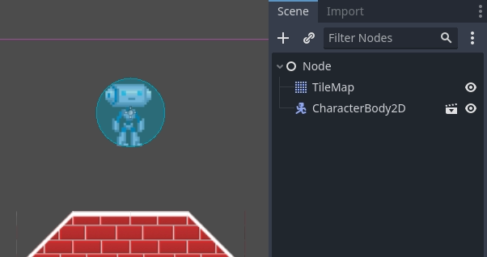

Kinematic character (2D)
Introduction
Yes, the name sounds strange. "Kinematic Character". What is that? The reason for the name is that, when physics engines came out, they were called "Dynamics" engines (because they dealt mainly with collision responses). Many attempts were made to create a character controller using the dynamics engines, but it wasn't as easy as it seemed. Godot has one of the best implementations of dynamic character controller you can find (as it can be seen in the 2d/platformer demo), but using it requires a considerable level of skill and understanding of physics engines (or a lot of patience with trial and error).
Some physics engines, such as Havok seem to swear by dynamic character controllers as the best option, while others (PhysX) would rather promote the kinematic one.
So, what is the difference?:
A dynamic character controller uses a rigid body with an infinite inertia tensor. It's a rigid body that can't rotate. Physics engines always let objects move and collide, then solve their collisions all together. This makes dynamic character controllers able to interact with other physics objects seamlessly, as seen in the platformer demo. However, these interactions are not always predictable. Collisions can take more than one frame to be solved, so a few collisions may seem to displace a tiny bit. Those problems can be fixed, but require a certain amount of skill.
A kinematic character controller is assumed to always begin in a non-colliding state, and will always move to a non-colliding state. If it starts in a colliding state, it will try to free itself like rigid bodies do, but this is the exception, not the rule. This makes their control and motion a lot more predictable and easier to program. However, as a downside, they can't directly interact with other physics objects, unless done by hand in code.
This short tutorial focuses on the kinematic character controller. It uses the old-school way of handling collisions, which is not necessarily simpler under the hood, but well hidden and presented as an API.
Physics process
To manage the logic of a kinematic body or character, it is always advised to use physics process, because it's called before physics step and its execution is in sync with physics server, also it is called the same amount of times per second, always. This makes physics and motion calculation work in a more predictable way than using regular process, which might have spikes or lose precision if the frame rate is too high or too low.
extends CharacterBody2D
func _physics_process(delta):
pass
using Godot;
public partial class MyCharacterBody2D : CharacterBody2D
{
public override void _PhysicsProcess(double delta)
{
}
}
Scene setup
To have something to test, here's the scene (from the tilemap tutorial): kinematic_character_2d_starter.zip. We'll be creating a new scene for the character. Use the robot sprite and create a scene like this:

You'll notice that there's a warning icon next to our CollisionShape2D node; that's because we haven't defined a shape for it. Create a new CircleShape2D in the shape property of CollisionShape2D. Click on <CircleShape2D> to go to the options for it, and set the radius to 30:

Note: As mentioned before in the physics tutorial, the physics engine can't handle scale on most types of shapes (only collision polygons, planes and segments work), so always change the parameters (such as radius) of the shape instead of scaling it. The same is also true for the kinematic/rigid/static bodies themselves, as their scale affects the shape scale.
Now, create a script for the character, the one used as an example above should work as a base.
Finally, instance that character scene in the tilemap, and make the map scene the main one, so it runs when pressing play.

Moving the kinematic character
Go back to the character scene, and open the script, the magic begins
now! Kinematic body will do nothing by default, but it has a
useful function called CharacterBody2D.move_and_collide().
This function takes a Vector2 as
an argument, and tries to apply that motion to the kinematic body. If a
collision happens, it stops right at the moment of the collision.
So, let's move our sprite downwards until it hits the floor:
extends CharacterBody2D
func _physics_process(delta):
move_and_collide(Vector2(0, 1)) # Move down 1 pixel per physics frame
using Godot;
public partial class MyCharacterBody2D : CharacterBody2D
{
public override void _PhysicsProcess(double delta)
{
// Move down 1 pixel per physics frame
MoveAndCollide(new Vector2(0, 1));
}
}
The result is that the character will move, but stop right when hitting the floor. Pretty cool, huh?
The next step will be adding gravity to the mix, this way it behaves a little more like a regular game character:
extends CharacterBody2D
const GRAVITY = 200.0
func _physics_process(delta):
velocity.y += delta * GRAVITY
var motion = velocity * delta
move_and_collide(motion)
using Godot;
public partial class MyCharacterBody2D : CharacterBody2D
{
private const float Gravity = 200.0f;
public override void _PhysicsProcess(double delta)
{
var velocity = Velocity;
velocity.Y += (float)delta * Gravity;
Velocity = velocity;
var motion = velocity * (float)delta;
MoveAndCollide(motion);
}
}
Now the character falls smoothly. Let's make it walk to the sides, left and right when touching the directional keys. Remember that the values being used (for speed at least) are pixels/second.
This adds basic support for walking when pressing left and right:
extends CharacterBody2D
const GRAVITY = 200.0
const WALK_SPEED = 200
func _physics_process(delta):
velocity.y += delta * GRAVITY
if Input.is_action_pressed("ui_left"):
velocity.x = -WALK_SPEED
elif Input.is_action_pressed("ui_right"):
velocity.x = WALK_SPEED
else:
velocity.x = 0
# "move_and_slide" already takes delta time into account.
move_and_slide()
using Godot;
public partial class MyCharacterBody2D : CharacterBody2D
{
private const float Gravity = 200.0f;
private const int WalkSpeed = 200;
public override void _PhysicsProcess(double delta)
{
var velocity = Velocity;
velocity.Y += (float)delta * Gravity;
if (Input.IsActionPressed("ui_left"))
{
velocity.X = -WalkSpeed;
}
else if (Input.IsActionPressed("ui_right"))
{
velocity.X = WalkSpeed;
}
else
{
velocity.X = 0;
}
Velocity = velocity;
// "MoveAndSlide" already takes delta time into account.
MoveAndSlide();
}
}
And give it a try.
This is a good starting point for a platformer. A more complete demo can be found in the demo zip distributed with the engine, or in the https://github.com/godotengine/godot-demo-projects/tree/master/2d/kinematic_character.